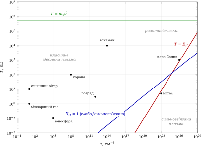
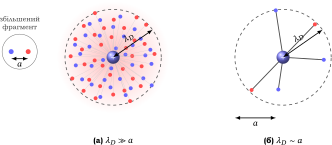
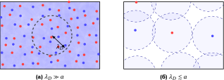
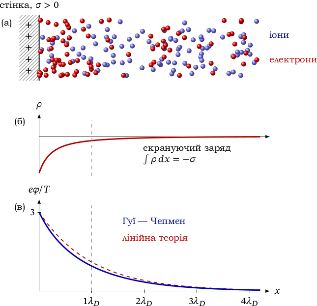
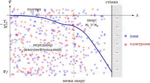
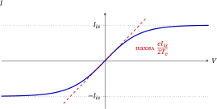

Елементи фізики плазми
1 Плазма: від іонізованого газу до колективного середовища
§ 1.1 Що таке плазма?
Плазма (від грец. plasma — виліплене, оформлене) — це частково або повністю іонізований газ, у якому густини позитивних і негативних зарядів практично однакові, а заряджені частинки поводяться колективно. Обидва виділені слова мають точний зміст, який ми з’ясуємо поступово в цьому розділі (квазінейтральність — у § 1.4, колективність — у § 1.6). Термін «плазма» запропонував І. Ленгмюр наприкінці 1920-х років; 1929 р. Л. Тонкс і Ленгмюр описали власні коливання електронного газу (§ 1.4) [4].
Ступінь іонізації характеризують величиною
\(\seteqnumber{0}{1.}{0}\)\begin{equation} \label {eq:ionization-degree} \alpha = \frac {n_i}{n_i + n_n}, \end{equation}
де \(n_i\) і \(n_n\) — концентрації іонів та нейтральних частинок. У плазмі можуть одночасно бути присутніми електрони, кілька сортів іонів і нейтральні атоми чи молекули. Залежно від \(\alpha \) розрізняють слабо іонізовану (частки відсотка), помірно іонізовану (кілька відсотків) і повністю іонізовану (\(\alpha \to 1\)) плазму.
Чим плазма відрізняється від нейтрального газу? Не просто наявністю заряджених частинок. У нейтральному газі частинки майже вільні й обмінюються імпульсом у короткочасних зіткненнях. У плазмі кулонівська сила спадає повільно (\(\propto r^{-2}\)): кількість частинок у сферичному шарі радіуса \(r\) зростає як \(r^2\), тож сумарний внесок далеких частинок не менший, ніж близьких, і кожна заряджена частинка одночасно взаємодіє з великою кількістю інших. Сила, що діє на частинку, формується усередненим полем багатьох частинок, а не парними зіткненнями. Такі «колективні взаємодії» породжують екранування зарядів, плазмові коливання, хвилі й нестійкості. Тому плазма не зводиться до сукупності незалежних частинок: її макроскопічні властивості визначаються спільною електромагнітною взаємодією. Ступінь колективності задає число \(N_D\) частинок у сфері радіуса \(\lambda _D\) (§ 1.6): поле заряду на відстанях понад дебаївський радіус гасить не найближчий сусід, а спільний внесок цих \(N_D\) частинок (§ 1.5).
Друга особливість — тісний зв’язок механіки з електродинамікою. Плазма не лише рухається в зовнішньому електромагнітному полі, а й сама створює макроскопічні поля та струми, які діють назад на її рух.
Теоретичні відомості Температура в енергетичних одиницях
Температуру \(T\) вимірюємо в енергетичних одиницях (\(k_{\mathrm B}=1\), тож \(k_{\mathrm B}T\) пишемо просто як \(T\)); практично \(T\) дають в еВ, \(1\) еВ \(\approx 11\,600\) К. Температура — це параметр максвеллівського розподілу \(f\propto \exp (-mv^2/2T)\); середня кінетична енергія поступального руху \(\langle mv^2/2\rangle =\tfrac 32T\). Поки не сказано інакше, мова йде саме про такий розподіл. Для оцінок зручні числа (СГС): \(e=4{,}8\times 10^{-10}\) СГС, \(e^2\approx 1{,}44\times 10^{-7}\) еВ\(\cdot \)см, \(1\) СГС напруженості поля \(=300\) В/см.
Плазма виникає різними способами: термічною іонізацією (нагрівання), електричним розрядом, фотоіонізацією, ударною іонізацією, бомбардуванням частинками. Залежно від температури її поділяють на низькотемпературну (\(T\lesssim 10^5\) К, тобто \(\lesssim 10\) еВ) і високотемпературну (\(T\gtrsim 10^6\) К, тобто \(\gtrsim 100\) еВ; у термоядерних установках (токамаках — тороїдальних магнітних камерах) — до \(10^8\) К \(\approx 10\) кеВ і вище). Область між цими межами називають проміжною. Саме високотемпературна плазма потрібна для реакцій керованого термоядерного синтезу. Не варто плутати цей поділ з назвами «холодна» і «гаряча» плазма, які трапляються далі в теорії хвиль: там ідеться не про саме значення \(T\), а про те, чи істотний тепловий рух частинок для процесу, що розглядається (це пояснено там, де такі назви з’являються, і в Словнику термінів). Діапазон реальних плазм надзвичайно широкий (табл. 1.1).
| Плазма |
\(n_e\), \(\mathrm {см}^{-3}\) |
\(T\), еВ |
\(\lambda _{De}\), см |
\(a=n^{-1/3}\), см |
\(N_D\) |
\(\Gamma \) |
|
Іоносфера |
\(10^{5}\) |
\(0{,}1\) |
\(0{,}74\) |
\(2{,}2\times 10^{-2}\) |
\(1{,}7\times 10^{5}\) |
\(7\times 10^{-5}\) |
|
Міжзоряний газ |
\(10\) |
\(1\) |
\(2{,}4\times 10^{2}\) |
\(0{,}46\) |
\(5\times 10^{8}\) |
\(3\times 10^{-7}\) |
|
Сонячна корона |
\(10^{8}\) |
\(10^{2}\) |
\(0{,}74\) |
\(2{,}2\times 10^{-3}\) |
\(1{,}7\times 10^{8}\) |
\(7\times 10^{-7}\) |
|
Ядро Сонця |
\(10^{26}\) |
\(10^{3}\) |
\(2{,}4\times 10^{-9}\) |
\(2{,}2\times 10^{-9}\) |
\(5\) |
\(7\times 10^{-2}\) |
|
Токамак |
\(10^{14}\) |
\(10^{4}\) |
\(7{,}4\times 10^{-3}\) |
\(2{,}2\times 10^{-5}\) |
\(1{,}7\times 10^{8}\) |
\(7\times 10^{-7}\) |
|
Сонячний вітер (1 а.о.) |
\(10\) |
\(10\) |
\(7{,}4\times 10^{2}\) |
\(0{,}46\) |
\(1{,}7\times 10^{10}\) |
\(3\times 10^{-8}\) |
|
Газовий розряд |
\(10^{12}\) |
\(3\) |
\(1{,}3\times 10^{-3}\) |
\(10^{-4}\) |
\(9\times 10^{3}\) |
\(5\times 10^{-4}\) |
|
Електрони в металі |
\(10^{23}\) |
вироджені, \(E_F\sim 8\) |
— |
\(2\times 10^{-8}\) |
— |
— |
Концентрації в таблиці відрізняються на 25 порядків (від \(10\) до \(10^{26}~\mathrm {см}^{-3}\)). У правих стовпцях наведено похідні величини: дебаївську довжину \(\lambda _{De}\), середню відстань між частинками \(a=n^{-1/3}\), число частинок у дебаївській сфері \(N_D\) і параметр зв’язку \(\Gamma \) (їх означено в § 1.6 і § 1.7). Для плазм із \(N_D\gg 1\) маємо \(\lambda _{De}\gg a\), тобто колективність; ядро Сонця (\(N_D\sim 5\), \(\Gamma \sim 0{,}07\)) лежить на межі застосовності (за \(\Gamma \) плазма слабкозв’язана, але \(N_D\sim 5\) — «багато» вже сумнівне, див. § 1.7), а електрони в металі вироджені (їхня енергія визначається не теплом, а принципом Паулі: \(T\ll E_F\)) й потребують квантового опису (§ 1.8); \(E_F\) — енергія Фермі, тобто найбільша енергія електронів при \(T=0\). Діаграму на рис. 1.1 читають так: кожна точка — плазма з даними \(n\) і \(T\), а лінії відокремлюють області, де змінюється фізика (\(\hbar \) — стала Планка, \(c\) — швидкість світла).

§ 1.2 Іонізація: формула Саха
Скільки енергії потрібно, щоб газ став плазмою? Енергія іонізації атома водню \(I=13{,}6\) еВ, що відповідає \(1{,}6\times 10^{5}\) К, проте газ іонізується помітно за значно нижчих температур. Пояснює це формула Саха, яка визначає ступінь іонізації газу в стані термодинамічної рівноваги.
Теоретичні відомості Нагадаємо зі статистичної фізики
Для ідеального газу з концентрацією \(n\) хімічний потенціал \(\mu =T\ln \bigl (n\lambda _T^3/g\bigr )\), де \(\lambda _T=\sqrt {2\pi \hbar ^2/mT}\) — теплова довжина хвилі де Бройля, \(g\) — статистична вага (кратність виродженого внутрішнього стану; для електрона зі спіном \(g_e=2\)). Умова хімічної рівноваги реакції \(\text {атом}\rightleftharpoons \text {іон}+\text {електрон}\): \(\mu _a=\mu _i+\mu _e\). Енергія іонізації \(I\) зсуває нуль енергії: атом лежить на \(I\) нижче за пару «іон + електрон», тобто \(\mu _a=T\ln (n_n\lambda _{Ta}^3/g_a)-I\) (\(n_n\) — концентрація атомів). Підставляючи, маємо \(\ln \dfrac {n_e\lambda _{Te}^3}{g_e}+\ln \dfrac {n_i\lambda _{Ti}^3}{g_i}=\ln \dfrac {n_n\lambda _{Ta}^3}{g_a}-\dfrac IT\), звідки \(\dfrac {n_en_i}{n_n}=\dfrac {g_eg_i}{g_a}\,\dfrac {\lambda _{Ta}^3}{\lambda _{Te}^3\lambda _{Ti}^3}\,e^{-I/T}\). Оскільки \(m_a\approx m_i\), то \(\lambda _{Ta}\approx \lambda _{Ti}\), і залишається \(\dfrac {n_en_i}{n_n}=\dfrac {g_eg_i}{g_a}\,\lambda _{Te}^{-3}\,e^{-I/T}\). Для водню \(g_eg_i/g_a=2\cdot 1/2=1\) (\(g_e=2\) за спіном електрона, \(g_i=1\) для протона, \(g_a=2\) для основного стану атома). Тут \(T\) — температура електронів, а газ вважаємо ідеальним і рівноважним. (Врізку можна пропустити при першому читанні: далі важливий лише результат — формула Саха.)
Для водню формула Саха [4] має вигляд (\(m\) — маса електрона)
\(\seteqnumber{0}{1.}{1}\)\begin{equation} \label {eq:saha} \frac {n_e n_i}{n_n} = \left (\frac {m T}{2\pi \hbar ^2}\right )^{3/2}\exp \left (-\frac {I}{T}\right ) \approx 2{,}4\times 10^{15}\,T^{3/2}\,e^{-I/T}~\mathrm {см}^{-3}, \end{equation}
де в числовій формі \(T\) підставляють у кельвінах, а тоді й \(I\) в показнику експоненти треба виразити в кельвінах: \(I/k_{\mathrm B}\approx 1{,}58\times 10^{5}\) К (тут, і лише тут, повертаємо \(k_{\mathrm B}\) явно). Для інших елементів у правій частині з’являється відношення статистичних ваг \(g_eg_i/g_a\).
Дві обставини визначають зміст формули. По-перше, експоненціальний множник: ступінь іонізації стає помітним, коли \(T\) лише у від \(10\) до \(20\) разів менша за \(I\). По-друге, перед експонентою стоїть величина \(n_q=(mT/2\pi \hbar ^2)^{3/2}=\lambda _{Te}^{-3}\), обернена до квантового об’єму електрона (\(\lambda _{Te}\) — теплова довжина хвилі де Бройля з врізки вище). Об’єм \(\lambda _{Te}^3\) — це «клітинка», яку займає один квантовий стан електрона, тож \(n_q=\lambda _{Te}^{-3}\) — кількість станів, доступних електрону в одиниці об’єму (для \(T=1\) еВ \(n_q\approx 3\times 10^{21}~\mathrm {см}^{-3}\)). Класична статистика застосовна, поки \(n_e\ll n_q\). Для типової розрідженої плазми \(n_q/n=1/(n\lambda _{Te}^3)\) лежить від \(10^{6}\) до \(10^{10}\): на кожен електрон припадає величезна кількість вільних станів, тому вільний стан значно вигідніший за зв’язаний в атомі (виграш ентропії) і перекриває больцманівський фактор \(e^{-I/T}\) уже за \(T\) від \(I/20\) до \(I/10\). Звідси ще один наслідок: за однакової температури чим розрідженіший газ, тим легше він іонізується — менша \(n\) означає більше вільних станів на електрон.
Іонізація за кімнатної температури. Для контрасту візьмемо кімнатну температуру (\(T\approx 0{,}026\) еВ) і газ з \(I=14{,}6\) еВ при \(n\approx 3\times 10^{19}~\mathrm {см}^{-3}\) (атоми азоту; реальний \(\mathrm N_2\) молекулярний, але порядок величини той самий): \(e^{-I/T}\sim 10^{-244}\), тож ступінь іонізації \(\alpha \sim 10^{-122}\), тобто практично нуль. А водень при \(1\) еВ і густині \(10^{17}~\mathrm {см}^{-3}\) іонізований уже на \(\sim 20\,\%\).
Щоб знайти \(\alpha \), зауважимо: кожен акт іонізації народжує пару іон\({}+{}\)електрон, тож \(n_e=n_i\). Позначивши повну концентрацію частинок \(n=n_i+n_n\), маємо \(n_e=n_i=\alpha n\), \(n_n=(1-\alpha )n\), і рівняння (1.2) набуває вигляду \(\alpha ^2/(1-\alpha )=n_q\,e^{-I/T}/n\) — квадратне рівняння відносно \(\alpha \). Для водню з повною концентрацією частинок \(n=10^{17}~\mathrm {см}^{-3}\) його розв’язок дає
\(\seteqnumber{0}{1.}{2}\)\begin{equation*} \alpha \approx 1{,}3\times 10^{-4}\ (0{,}5~\text {еВ}),\qquad \alpha \approx 0{,}18\ (1~\text {еВ}),\qquad \alpha \approx 0{,}99\ (2~\text {еВ}). \end{equation*}
Газ іонізується у вузькому інтервалі температур (рис. 1.2): для водню з повною концентрацією \(10^{17}~\mathrm {см}^{-3}\) — між \(0{,}5\) і \(2\) еВ (при іншій густині інтервал зсувається логарифмічно). Перехід плавний: \(\alpha (T)\) — гладка функція, розриву немає, тобто це кросовер1, а не фазовий перехід. Так є в розрідженому газі, де застосовна формула (1.2). У дуже щільній речовині (сильнозв’язана плазма) можливий і справжній фазовий перехід, але це вже окреме питання. У розрядах і під дією випромінювання ступінь іонізації може значно відрізнятися від рівноважного, тому формула (1.2) дає лише орієнтир.
1 Кросовер — плавний перехід між двома станами системи при зміні параметра (тут температури): без стрибка властивостей і без певної температури переходу, на відміну від фазового переходу, як-от кипіння води
§ 1.3 Температура плазми та два компоненти
У плазмі електрони й іони можуть мати різні середні кінетичні енергії, тому взагалі треба вводити дві температури \(T_e\) та \(T_i\). Температуру вимірюють в енергетичних одиницях, зазвичай в еВ (співвідношення з кельвінами — у врізці в § 1.1).
У газорозрядній плазмі енергія від зовнішнього поля спершу передається електронам: струм, а отже й джоулеве тепло \(\vect j\cdot \vect E\), переносять переважно вони, бо значно рухливіші за іони. Через велику різницю мас (\(m_i\geq 1836\,m_e\)) електрон при пружному зіткненні з іоном передає тому лише частку \(\delta E/E\le 4m_em_i/(m_e+m_i)^2\approx 4m_e/m_i\approx 0{,}2\,\%\) (для протона) своєї енергії — як тенісний м’ячик, що відскакує від вантажівки (центральний пружний удар з теоретичної механіки), тому часто \(T_e>T_i\). Лише за достатньо великої густини та тривалого часу електрон-іонні зіткнення вирівнюють температури: \(T_e=T_i=T\). Отже, вираз «температура плазми» без уточнення неоднозначний, і в нерівноважній плазмі \(T_e\) та \(T_i\) слід вказувати окремо. Якщо \(T_e\neq T_i\), плазму називають двотемпературною. Яскравий приклад — позитивний стовп тліючого розряду (довга світна однорідна ділянка розряду в трубці між катодом і анодом) за тиску \(\sim 0{,}1\) мм рт. ст.: температура електронів досягає \(\sim 1\)–\(3\) еВ (\(\sim 10^4\)–\(3\times 10^4\) К) [4], тоді як іони мають лише кілька сотень кельвінів. Різні часи релаксації (розд. 4) пояснюють, чому така система існує тривалий час: спочатку встановлюється максвеллівський розподіл електронів, потім іонів, і лише згодом вирівнюються їхні температури.
§ 1.4 Квазінейтральність і плазмові коливання
Якби в плазмі була присутня велика кількість нескомпенсованих зарядів, виникали б сильні поля, які приводили б заряди в рух. Тому на макроскопічних масштабах густини позитивного й негативного зарядів практично збігаються.
Нехай у плазмі з концентраціями \(n_e\) електронів (заряд \(-e\)) та \(n_i\) іонів (заряд \(+Ze\)) виникла просторова локальна різниця густин. За теоремою Гаусса виникне кулонівське поле:
\(\seteqnumber{0}{1.}{2}\)\begin{equation} \nabla \cdot \vect {E} = 4\pi \rho = 4\pi e (Z n_i - n_e). \end{equation}
Оскільки питомий заряд електрона \(e/m_e\) величезний, а іони важкі й повільні, це поле за дуже короткий час (його знайдемо нижче) створить потужні сили, які змістять електрони так, щоб знівелювати розділення зарядів. Оцінимо силу цього поля.
Сила поля при розділенні зарядів. Плазма з \(n=10^{12}~\mathrm {см}^{-3}\) і розміром \(L=1\) см, розділення зарядів лише на \(1\,\%\), \(\delta n=10^{10}~\mathrm {см}^{-3}\). Тоді \(E\sim 4\pi e\,\delta n\,L\approx 60\) СГС\(\approx 2\times 10^{4}\) В/см, тоді як тепловому руху за \(T=1\) еВ відповідає поле \(T/(eL)\sim 1\) В/см (поле суттєве, якщо його робота \(eEL\) на відстані \(L\) порівнянна з тепловою енергією \(T\)). Навіть відхилення \(\delta n/n\sim 10^{-6}\) дає \(E\sim 2\) В/см, тобто порівнянне з тепловим: розділення зарядів стає енергетично невигідним уже на рівні \(10^{-6}\).
Загальну оцінку дано наприкінці § 1.5.
Тому на макроскопічних масштабах плазма є квазінейтральною:
\(\seteqnumber{0}{1.}{3}\)\begin{equation} \label {eq:quasineutrality} \rho = \sum _s q_s n_s = e(Z n_i - n_e) \approx 0 \quad \Rightarrow \quad n_e \approx Z n_i. \end{equation}
Квазінейтральність — це не тотожний нуль у кожній точці, а макроскопічне наближення. Локальні відхилення від нейтральності можливі й саме вони лежать в основі екранування та плазмових коливань.
Плазмові коливання
Нехай в плоскому шарі однорідної плазми електрони змістилися як ціле відносно нерухомого іонного фону (іони важкі, \(m_i\gg m_e\)) на невелику відстань \(x\) (рис. 1.3). Зміщення однакове для всіх електронів, тому відстані між ними не змінюються, а їхня взаємодія одне з одним (за третім законом Ньютона) не впливає на рух електронів як цілого: його задає лише поле, що виникло через розділення зарядів. Хаотичний тепловий рух накладається на цей спільний зсув і поки не розглядається. На краях шару виникають заряди з поверхневою густиною \(\sigma =\mp n_eex\), і між ними — поле плоского конденсатора, напрямлене так, щоб повернути електрони назад: \(E=4\pi n_eex\). Рівняння руху електрона (його заряд \(-e\))
\(\seteqnumber{0}{1.}{4}\)\begin{equation} \label {eq:plasma-oscillation-eq} m_e\ddot x=-eE=-4\pi n_ee^2x \quad \Rightarrow \quad \ddot x+\omega _{pe}^2x=0, \end{equation}
де
\(\seteqnumber{0}{1.}{5}\)\begin{equation} \label {eq:plasma-frequency} \tcbhighmath {\omega _{pe}=\sqrt {\frac {4\pi n_ee^2}{m_e}}\approx 5{,}64\times 10^4\sqrt {n_e[\mathrm {см}^{-3}]}~\mathrm {с}^{-1}} \end{equation}
називається електронною плазмовою (або ленгмюрівською) частотою, а самі коливання — плазмовими. Тобто \(\omega _{pe}\) — це частота, з якою плазма «відновлює» порушену квазінейтральність, а \(\omega _{pe}^{-1}\) — характерний час цього відновлення (для \(n=10^{12}~\mathrm {см}^{-3}\) це \(\sim 2\times 10^{-11}\) с).
Той самий результат дає й опис без уявного конденсатора. З рівняння неперервності \(\partial _t\rho +\nabla \cdot \vect {j}=0\) та рівняння руху \(m_e\partial _t\vect {v}=-e\vect {E}\) при \(\vect {j}=-n_ee\vect {v}\) маємо \(\partial _t^2\rho =-\nabla \cdot \partial _t\vect {j}=-(n_ee^2/m_e)\nabla \cdot \vect {E}\), а за теоремою Гаусса \(\nabla \cdot \vect {E}=4\pi \rho \). Тому
\(\seteqnumber{0}{1.}{6}\)\begin{equation*} \frac {\partial ^2\rho }{\partial t^2}+\omega _{pe}^2\rho =0. \end{equation*}
Отже, густина заряду, тобто порушення квазінейтральності, сама коливається з частотою \(\omega _{pe}\).
З урахуванням руху іонів (заряд \(Ze\), маса \(m_i\)) для довгохвильових поздовжніх коливань \(\omega _p^2=\omega _{pe}^2+\omega _{pi}^2\simeq \omega _{pe}^2\), де \(\omega _{pi}^2=4\pi Z^2e^2n_i/m_i\): іонний внесок мізерний (оцінка — у задачі 1.4), тому далі \(\omega _p\equiv \omega _{pe}\). Реальні коливання загасають, а за теплового руху їхня частота залежить від хвильового числа (§ 2.3), тож \(\omega _{pe}\) слід розуміти насамперед як базову масштабну частоту плазми.
Тепловий рух зв’язує цей час із довжиною: за час \(\omega _{pe}^{-1}\) електрон із тепловою швидкістю \(v_{Te}\) проходить відстань
\(\seteqnumber{0}{1.}{6}\)\begin{equation} \label {eq:debye-vT-wp} \tcbhighmath {\lambda _{De}=\frac {v_{Te}}{\omega _{pe}},\qquad v_{Te}=\sqrt {\frac {T_e}{m_e}}\approx 4{,}2\times 10^{7}\sqrt {T_e[\text {еВ}]}~\mathrm {см/с}}. \end{equation}
Це і є дебаївська довжина (у § 1.5 вона виведеться з екранування). Тому плазма на масштабах, менших за \(\lambda _{De}\) «не встигає» колективно відповідати: електрон вилітає з такої області раніше, ніж поле встигне його повернути, і тепловий рух розмиває ефект. Отже, колективну реакцію плазми задають два масштаби: час \(\sim \omega _{pe}^{-1}\) і довжина \(\sim \lambda _{De}\).
§ 1.5 Дебаївське екранування
Внесемо в плазму малий пробний заряд \(q\). У вакуумі його поле спадає як \(1/r\) і сягає як завгодно далеко. У плазмі ж є рухливі заряджені частинки, які реагують на це поле: частинки протилежного знака притягуються до заряду, однойменного — відштовхуються. Заряд виявляється оточеним «шубою» частинок протилежного знака, і його поле зменшується (рис. 1.4). Тому, попри далекодійність кулонівської взаємодії, на великих відстанях поле окремого заряду не відчувається. Тепловий рух не дає такій «шубі» стиснутися до точки: вона розмазана на деяку характерну відстань порядку \(\lambda _D\) (повний її заряд дорівнює \(-q\), див. нижче). Знайдемо, чому дорівнює \(\lambda _D\).
Кожен сорт частинок \(s\) (заряд \(q_s\), концентрація \(n_s\)) перебуває в стаціонарному потенціалі \(\varphi (\vect {r})\) у тепловій рівновазі зі своєю температурою \(T_s\), тому розподіл частинок за Больцманом
\(\seteqnumber{0}{1.}{7}\)\begin{equation*} n_s=n_{s0}\exp \left (-\frac {q_s\varphi }{T_s}\right ). \end{equation*}
Тут \(n_{s0}\) — незбурена концентрація вдалині від заряду, де \(\varphi \to 0\), а сумарний заряд плазми нульовий: \(\sum _sq_sn_{s0}=0\). Густина заряду плазми
\(\seteqnumber{0}{1.}{7}\)\begin{equation*} \rho =\sum _sq_sn_{s0}\exp \left (-\frac {q_s\varphi }{T_s}\right ). \end{equation*}
Для слабкого поля \(|q_s\varphi |\ll T_s\) розкладемо експоненти. Нульовий доданок зникає завдяки нейтральності, залишається
\(\seteqnumber{0}{1.}{7}\)\begin{equation*} \rho \simeq -\varphi \sum _s\frac {n_{s0}q_s^2}{T_s}. \end{equation*}
Підстановка в рівняння Пуассона \(\Delta \varphi =-4\pi (\rho +q\delta (\vect {r}))\) дає (дельта-функція \(\delta (\vect r)\) описує точковий пробний заряд і забезпечує кулонівську поведінку потенціалу при \(r\to 0\))
\(\seteqnumber{0}{1.}{7}\)\begin{equation} \label {eq:poisson-screened} \Delta \varphi -\frac {\varphi }{\lambda _D^2}=-4\pi q\,\delta (\vect {r}), \qquad \tcbhighmath {\frac {1}{\lambda _D^2}=4\pi \sum _s\frac {n_{s0}q_s^2}{T_s}}. \end{equation}
Величина \(\lambda _D\) називається дебаївською довжиною (радіусом екранування).
Поле пробного заряду сферично симетричне, \(\varphi =\varphi (r)\), і при \(r>0\) маємо \(\Delta \varphi =\dfrac 1r\dfrac {d^2(r\varphi )}{dr^2}\). Для \(u=r\varphi \) рівняння (1.8) спрощується до \(u''=u/\lambda _D^2\), загальний розв’язок якого \(u=Ae^{-r/\lambda _D}+Be^{r/\lambda _D}\). Умова \(\varphi \to 0\) при \(r\to \infty \) виключає зростаючий доданок (\(B=0\)), а близько до заряду потенціал має збігатися з кулонівським \(q/r\), звідки \(A=q\):
\(\seteqnumber{0}{1.}{8}\)\begin{equation} \label {eq:screened-potential} \varphi (r)=\frac qr\exp \left (-\frac r{\lambda _D}\right ). \end{equation}
Кулонівське поле заряду експоненціально послаблюється на відстанях порядку \(\lambda _D\) (рис. 1.5). Цей результат у 1923 р. одержали П. Дебай і Е. Хюккель для електролітів; плазма — його найчистіший прояв.
Знайдемо заряд «шуби». Густина заряду плазми \(\rho =-\Delta \varphi /4\pi =-\varphi /(4\pi \lambda _D^2)\) при \(r>0\), тому
\(\seteqnumber{0}{1.}{9}\)\begin{equation*} \int \rho \,4\pi r^2dr=-\frac q{\lambda _D^2}\int _0^\infty re^{-r/\lambda _D}dr=-q. \end{equation*}
Отже, повний заряд оболонки в точності компенсує \(q\), а її характерний радіус — \(\lambda _D\). Для спостерігача на відстані \(\gg \lambda _D\) пробний заряд разом з оболонкою практично нейтральний. Те саме стосується кожної зарядженої частинки самої плазми: для решти частинок вона «пробна», тож усюди в плазмі частинка оточена шубою завтовшки \(\lambda _D\) (це використаємо в § 1.6).
Скільки сортів частинок бере участь в екрануванні?
Для електронів і одноразово заряджених іонів
\(\seteqnumber{0}{1.}{9}\)\begin{equation*} \frac 1{\lambda _D^2}=\frac 1{\lambda _{De}^2}+\frac 1{\lambda _{Di}^2}, \qquad \lambda _{De}=\sqrt {\frac {T_e}{4\pi n_ee^2}}, \quad \lambda _{Di}=\sqrt {\frac {T_i}{4\pi n_ie^2}}. \end{equation*}
При \(T_e=T_i=T\) маємо
\(\seteqnumber{0}{1.}{9}\)\begin{equation} \label {eq:debye-radius} \lambda _D=\sqrt {\frac {T}{8\pi ne^2}}=\frac {\lambda _{De}}{\sqrt 2}. \end{equation}
Практично \(\lambda _{De}\approx 743\sqrt {T_e[\text {еВ}]/n_e[\mathrm {см}^{-3}]}\) см.
Ця довжина збігається з \(v_{Te}/\omega _{pe}\) з (1.7): екранування встановлюється за час відновлення нейтральності, поки тепловий електрон проходить \(\lambda _{De}\).
Формули вище припускають, що обидва сорти встигають перебудуватися в полі заряду, тобто що процес повільний порівняно з часом руху іонів на відстань \(\lambda _D\) (\(\sim \lambda _D/v_{Ti}\), де \(v_{Ti}=\sqrt {T_i/m_i}\)). Якщо процес швидкий, іони лишаються практично на місцях, екранують лише електрони, і замість \(\lambda _D\) слід брати \(\lambda _{De}\). Зауважимо: у двотемпературній плазмі з \(T_i\ll T_e\) сума дає \(\lambda _D\approx \lambda _{Di}\ll \lambda _{De}\) — холодні іони екранують статичний заряд ефективніше за гарячі електрони, але лише якщо встигли досягти рівноваги з температурою \(T_i\). У літературі під «дебаївською довжиною» найчастіше розуміють саме \(\lambda _{De}\), тому в кожній задачі слід перевіряти, які компоненти встигають перебудуватися.
Умова застосовності
Лінеаризація експонент потребує \(|q_s\varphi |\ll T_s\) принаймні на відстанях \(r\gtrsim \lambda _D\). Для \(q=e\) на \(r=\lambda _D\) це \(e^2/\lambda _D\ll T\), або, підставивши (1.8), \(1/(8\pi n\lambda _D^3)\ll 1\) (для двох сортів \(T=8\pi ne^2\lambda _D^2\)), тобто, з точністю до числового множника, \(1/N_D\ll 1\) (число \(N_D\) означено в § 1.6). Отже, теорія виконується лише тоді, коли в сфері радіуса \(\lambda _D\) міститься багато частинок (докладніше — у § 1.6): за одиниць частинок густина не є гладкою функцією, і усереднювати за Больцманом нічого. Але сама \(\lambda _D\) лишається лінійкою, з якою порівнюють інші масштаби. З відстанню між частинками \(a\): чи містить хмара багато частинок (\(\lambda _D\gg a\)) чи ні (\(\lambda _D\lesssim a\), див. § 1.7). З розміром системи \(L\): чи встигає екранування утворитися всередині неї (\(\lambda _D\ll L\)).
Зовсім близько до пробного заряду (\(r\lesssim e^2/T\)) \(|q\varphi |\gtrsim T\) і лінеаризація порушується, але ця область менша за \(\lambda _D\) у \(\sim 1/N_D\) разів, тож на масштабі екранування формула (1.9) справедлива.
Квазінейтральність і розмір системи
Тепер можна уточнити зміст квазінейтральності. Нехай на масштабі \(L\) виникла локальна неоднорідність концентрації \(\delta n\). З рівняння Пуассона \(\varphi /L^2\sim 4\pi e\,\delta n\), а потенціал не може суттєво перевищити \(T/e\): за \(e\varphi \gg T\) електрони з тепловими енергіями \(\sim T\) були б виштовхані або втягнені полем, і відхилення зникло б. Тож \(\varphi \lesssim T/e\) і
\(\seteqnumber{0}{1.}{10}\)\begin{equation*} \frac {\delta n}n\lesssim \frac {T}{4\pi ne^2L^2}=\left (\frac {\lambda _{De}}L\right )^2. \end{equation*}
Отже, квазінейтральність виконується тим точніше, чим менша дебаївська довжина порівняно з розміром плазми \(L\):
\(\seteqnumber{0}{1.}{10}\)\begin{equation} \label {eq:size-condition} \lambda _D\ll L. \end{equation}
(У нерівностях такого типу різницею між \(\lambda _D\) і \(\lambda _{De}\) нехтуємо — вона лише в множнику \(\sqrt 2\).) Біля стінок, електродів та інших меж ця умова порушується — там існують дебаївські шари, де квазінейтральності немає.
§ 1.6 Дебаївська сфера. Умова колективності
Електричне поле зарядженої частинки в плазмі екранується іншими частинками. Екранування колективне, якщо цих частинок багато. Тому порахуємо їх в області радіуса \(\lambda _{De}\) навколо цієї частинки; її називають дебаївською сферою.
Кількість електронів у такій сфері дорівнює
\(\seteqnumber{0}{1.}{11}\)\begin{equation} \label {eq:ND} N_D=\frac {4\pi }{3}n_e\lambda _{De}^3. \end{equation}
Отже, \(N_D\) — це просто число електронів у області, на масштабі якої відбувається дебаївське екранування. Тут береться саме електронна довжина \(\lambda _{De}\); заміна на \(\lambda _D=\lambda _{De}/\sqrt 2\) змінила б \(N_D\) лише в \(2^{3/2}\approx 2{,}8\) раза, що для умови \(N_D\gg 1\) несуттєво.
Якщо
\(\seteqnumber{0}{1.}{12}\)\begin{equation} \label {eq:ND-coll} N_D\gg 1, \end{equation}
то в екрануванні бере участь дуже багато частинок. У цьому випадку не можна говорити про взаємодію цієї частинки з одним конкретним сусідом: поле, що виникає унаслідок перерозподілу зарядів, визначається сумарною дією великої кількості частинок. Екранування має колективний характер.
Саме тому умова (1.13) є основною умовою колективності плазми.
Є й спостережуваний наслідок. Парні зіткнення змінюють імпульс частинки з частотою \(\nu \sim \omega _p\ln N_D/N_D\) (орієнтовно, з точністю до множника \(\sim 10\); виведемо в розд. 4; логарифм дають далекі проліти, а не лише близькі зіткнення), де \(\omega _p=v_{Te}/\lambda _{De}\) — плазмова частота, тобто швидкість колективної відповіді (§ 1.4). Тому за \(N_D\gg 1\) колективні ефекти домінують над парними зіткненнями: \(\nu \ll \omega _p\). Саме це робить «усереднене поле багатьох частинок» головною силою в плазмі.
Зрозуміємо тепер, коли ця умова виконується. Концентрація \(n\) визначає характерну відстань між частинками. Оскільки на одну частинку в середньому припадає об’єм порядку \(1/n\), маємо
\(\seteqnumber{0}{1.}{13}\)\begin{equation*} a^3\sim \frac {1}{n}, \qquad a\sim n^{-1/3}, \end{equation*}
де \(a\) — характерний масштаб міжчастинкової відстані.
Тоді
\(\seteqnumber{0}{1.}{13}\)\begin{equation*} N_D\sim \left (\frac {\lambda _D}{a}\right )^3. \end{equation*}
Отже, умова \(N_D\gg 1\) просто означає
\(\seteqnumber{0}{1.}{13}\)\begin{equation*} \lambda _D\gg a. \end{equation*}
Інакше кажучи, дебаївська довжина повинна бути набагато більшою за відстань між сусідніми частинками. Тільки тоді в області екранування міститься багато частинок і екранування може бути колективним. Отже, «велика» дебаївська сфера означає велике число частинок у ній, а не просто велике значення \(\lambda _D\).
Тут інтуїція часто працює навпаки. Здається: «багато частинок у сфері — вони сильно взаємодіють і постійно б’ються одна об одну; а коли сфера майже порожня, поле згасло і частинки вільні». Насправді все навпаки.
Багато частинок у сфері \(\Rightarrow \) кожен окремий сусід діє слабко. Дебаївська сфера велика саме тому, що плазма гаряча і (або) розріджена (\(\lambda _{De}^2=T/4\pi ne^2\)), а це ті самі умови, за яких сусіди далеко, а їхня потенціальна енергія \(e^2/a\) набагато менша за теплову \(T\) (тобто \(\Gamma \ll 1\), див. (1.15)). Поштовх від одного сусіда крихітний; сила на частинку — сума сотень таких крихітних внесків, що згладжуються в спільне поле. Сильне «стукання» плюса об мінус вимагає зближення до відстані \(e^2/T\ll a\), а це трапляється рідко. Тому ідеальна плазма — не плазма без дальніх сил, а газ майже вільних частинок у гладкому полі всіх інших; парні зіткнення й кореляції дають лише малі поправки \(\sim 1/N_D\).
Мало частинок у сфері (\(N_D\lesssim 1\)) \(\Rightarrow \) сусід діє сильно: хмари немає, поле сусіда на відстані \(a\) голе кулонівське, \(e^2/a\gtrsim T\) (§ 1.7).
Геометрично це видно так (рис. 1.6). Коли \(\lambda _D\gg a\), дебаївські сфери сусідніх частинок сильно перекриваються: у кожній точці одночасно «чують» одна одну сотні частинок, тому поле в ній є гладким усередненим результатом багатьох слабких внесків — це і є колективна поведінка. Будь-яка точка плазми лежить одразу в \(N_D\) сферах (стільки частинок міститься на відстані \(\lambda _D\) від неї). Тож за \(N_D\gg 1\) сфери зливаються в одне суцільне середовище з єдиним узгодженим полем (рис. 1.7 а). Самі «сфери» при цьому не є предметами. Екранувальна хмара несе заряд \(-e\), тобто надлишок лише однієї частинки протилежного знака серед \(N_D\), тоді як число частинок у сфері випадково коливається на \(\sim \sqrt {N_D}\gg 1\). На миттєвому знімку хмари не видно: вона існує лише в середньому, як слабка перевага протилежних зарядів біля цього. Кожна частинка водночас належить \(N_D\) чужим хмарам і вносить у кожну лише \(\sim 1/N_D\). Коли ж \(\lambda _D\lesssim a\), сфери окремі, і домінують парні взаємодії (рис. 1.7 б) — це область сильного зв’язку (§ 1.7).


§ 1.7 Слабкозв’язана та сильнозв’язана плазма
Є ще один спосіб оцінити, наскільки важливою є кулонівська взаємодія між сусідніми частинками. Порівняємо потенціальну енергію їхньої взаємодії
\(\seteqnumber{0}{1.}{13}\)\begin{equation*} U_{\mathrm C}\sim \frac {e^2}{a} \end{equation*}
з характерною енергією теплового руху
\(\seteqnumber{0}{1.}{13}\)\begin{equation*} U_T\sim T. \end{equation*}
Їхнє відношення називають параметром зв’язку:
\(\seteqnumber{0}{1.}{13}\)\begin{equation} \label {eq:Gamma} \Gamma = \frac {U_{\mathrm C}}{U_T} = \frac {e^2}{a\,T}, \qquad a=n^{-1/3}. \end{equation}
Таким чином, \(\Gamma \) безпосередньо показує, наскільки сильна кулонівська взаємодія порівняно з тепловим рухом.
При
\(\seteqnumber{0}{1.}{14}\)\begin{equation*} \Gamma \ll 1 \end{equation*}
теплова енергія значно більша за кулонівську. Частинки взаємодіють слабко, а плазму називають слабкозв’язаною. У цьому режимі
\(\seteqnumber{0}{1.}{14}\)\begin{equation*} N_D\gg 1, \end{equation*}
і екранування має колективний характер.
Навпаки, при
\(\seteqnumber{0}{1.}{14}\)\begin{equation*} \Gamma \gtrsim 1 \end{equation*}
кулонівська взаємодія між сусідніми частинками стає порівнянною з тепловою або перевищує її. Частинки рухаються вже не як майже незалежні частинки, а їхній рух суттєво корельований. Таку систему називають сильнозв’язаною.
Для нашого визначення \(a=n^{-1/3}\) зв’язок між \(\Gamma \) та \(N_D\) отримується безпосередньо з формули для дебаївської довжини. Справді, \(T=e^2n^{1/3}/\Gamma \), тож \(\lambda _{De}^2=T/(4\pi ne^2)=1/(4\pi n^{2/3}\Gamma )\) і \(N_D=\tfrac {4\pi }{3}n\lambda _{De}^3=\tfrac {4\pi }{3}(4\pi )^{-3/2}\Gamma ^{-3/2}\), тобто
\(\seteqnumber{0}{1.}{14}\)\begin{equation} \label {eq:ND-Gamma} N_D= \frac {1}{6\sqrt {\pi }}\, \Gamma ^{-3/2}. \end{equation}
Тому
\(\seteqnumber{0}{1.}{15}\)\begin{equation*} \Gamma \ll 1 \qquad \Longleftrightarrow \qquad N_D\gg 1. \end{equation*}
Тобто \(\Gamma \) і \(N_D\) відповідають за дві різні проблеми. Ближня: сусід на відстані \(a<\lambda _D\) діє голим полем \(e^2/a\), екранування його не послаблює — слабкість дає лише \(\Gamma \ll 1\). Дальня: кулонівський внесок далеких зарядів розбігався б, і його обрізає на \(\lambda _D\) спільна хмара \(N_D\) частинок. Еквівалентність означає, що обидві проблеми зникають одночасно.
Те саме через відношення довжин: \(\lambda _{De}^2/a^2=Ta/4\pi e^2=1/4\pi \Gamma \), тобто \(\lambda _{De}/a=(4\pi \Gamma )^{-1/2}\). За \(\Gamma \ll 1\) дебаївська довжина набагато більша за \(a\) і справді є довжиною екранування. За \(\Gamma \gtrsim 1\) формула дає \(\lambda _{De}\lesssim a\), і дебаївське екранування (колективне, експоненційне) там не працює. Заряд, як і раніше, оточений зарядом протилежного знака, сумарно \(-q\), але це вже не плавна хмара з сотень частинок, а шар найближчих сусідів на відстані \(\sim a\) (як перша оболонка сусідів у рідині); \(\lambda _D\) тут лишається лише мірною лінійкою.
Числові множники тут важливі. У (1.15) стоїть малий коефіцієнт: \(1/(6\sqrt \pi )\approx 0{,}09\), тому \(N_D\approx 0{,}09\,\Gamma ^{-3/2}\). Підставимо кілька значень: \(\Gamma =0{,}01\) дає \(N_D\approx 90\) (тобто близько сотні), \(\Gamma =0{,}07\) дає лише \(N_D\approx 5\), а \(\Gamma =1\) дає \(N_D\approx 0{,}1\). Отже, щоб у дебаївській сфері справді було багато частинок (\(N_D\gtrsim 100\)), потрібно не просто \(\Gamma <1\), а \(\Gamma \lesssim 0{,}01\). Саме так на практиці слід читати знак «\(\ll \)» у умові \(\Gamma \ll 1\).
Ядро Сонця: межа ідеальної плазми. Ядро Сонця: \(\Gamma \approx 0{,}07\), тобто формально \(\Gamma <1\), але \(N_D\approx 5\): у дебаївській сфері лише кілька частинок. Це все ще плазма (речовина повністю іонізована і квазінейтральна), проте колективний опис там працює лише наближено: поправки мають порядок \(1/N_D\sim 0{,}2\).
Тому Сонце лежить на межі застосовності теорії ідеальної плазми, а не глибоко всередині неї. Умова \(N_D\gtrsim 100\) каже, коли ця теорія точна, а не коли речовина є плазмою.
Для слабкозв’язаної плазми, крім того, справедливе наближення ідеального газу (поправка Дебая–Хюккеля: потенціал оболонки в точці самої частинки відрізняється від кулонівського на \(-q/\lambda _D\), тож кореляційна енергія \(W_{\text {кор}}\approx -e^2/2\lambda _D\) на частинку, а відносно \(|W_{\text {кор}}|/T\sim e^2/(\lambda _DT)\sim 1/N_D\ll 1\); вона дає лише малу поправку до тиску):
\(\seteqnumber{0}{1.}{15}\)\begin{equation} \label {eq:ideal-pressure} p\simeq \sum _s n_s T_s. \end{equation}
Нарешті, умова колективності сама по собі ще не гарантує квазінейтральності всієї системи: для цього потрібна ще умова (1.11), \(\lambda _D\ll L\). Тоді на макроскопічних масштабах, значно більших за \(\lambda _D\), зарядові неоднорідності швидко згладжуються і \(n_e\simeq Zn_i\).
Отже, маємо три різні умови з різним фізичним змістом:
-
1. \(N_D\gg 1\) — колективність екранування;
-
2. \(\lambda _D\ll L\) — квазінейтральність на масштабі системи;
-
3. \(\omega _p\tau \gg 1\) — плазма поводиться як плазма, а не як нейтральний газ: за час \(1/\omega _p\) плазма встигає колективно відповісти на збурення, а заряджена частинка — не зіткнутися з нейтральним атомом (\(\tau \) — середній час між зіткненнями заряджених частинок з нейтральними атомами). У слабко іонізованому газі з частими зіткненнями з нейтральними атомами ця умова порушується, і газ веде себе як звичайний, хоч \(N_D\gg 1\). Докладніше — в розд. 2.
Саме ці властивості дають змогу розглядати плазму як колективне квазінейтральне середовище.
§ 1.8 Екранування в виродженому газі: довжина Томаса–Фермі
Виведення дебаївського екранування спирається не на закон Больцмана як такий, а лише на чутливість концентрації електронів до потенціалу. Нехай електрони перебувають у рівновазі з хімічним потенціалом \(\mu \) (нерухомий іонний фон). У потенціалі \(\varphi \) електрон має додаткову енергію \(-e\varphi \), тому рівновага вимагає, щоб локальна величина \(\mu _{\mathrm {лок}}(n)-e\varphi \) була сталою. Звідси зміна концентрації \(\delta n=(\partial n/\partial \mu )\,e\varphi \), густина заряду \(\rho =-e\,\delta n\), і рівняння Пуассона набуває вигляду \(\Delta \varphi =\varphi /\lambda ^2\) з
\(\seteqnumber{0}{1.}{16}\)\begin{equation} \label {eq:screening-general} \frac 1{\lambda ^2}=4\pi e^2\,\frac {\partial n}{\partial \mu }. \end{equation}
Для невиродженого газу \(n\propto e^{\mu /T}\), \(\partial n/\partial \mu =n/T\), і одержуємо \(\lambda _{De}\). Для виродженого електронного газу металу (\(T\ll E_F\)) \(n\propto \mu ^{3/2}\), тобто \(\partial n/\partial \mu =3n/2E_F\), і
\(\seteqnumber{0}{1.}{17}\)\begin{equation} \label {eq:thomas-fermi} \lambda _{TF}=\sqrt {\frac {E_F}{6\pi ne^2}}\approx 0{,}5\sqrt {a_B\,n^{-1/3}},\qquad a_B=\frac {\hbar ^2}{me^2}=0{,}53\times 10^{-8}~\text {см}, \end{equation}
де використано \(E_F=(\hbar ^2/2m)(3\pi ^2n)^{2/3}\). Тобто в квантовій плазмі металу тепловий масштаб \(T\) замінюється енергією Фермі, а екранування визначається середньою відстанню між електронами.
Довжина Томаса–Фермі для міді. Для міді (\(n\approx 8{,}5\times 10^{22}~\mathrm {см}^{-3}\), \(E_F\approx 7\) еВ) \(\lambda _{TF}\approx 0{,}55\times 10^{-8}\) см: заряд провідника зосереджений у шарі завтовшки з частку міжатомної відстані.
Це й пояснює, чому в електростатиці так добре працює наближення «заряд розподілений по поверхні». Тут важлива не стільки сама оцінка \(\lambda _{TF}\), скільки ідея: масштаб екранування визначається властивостями розподілу частинок, а не самим фактом наявності заряду. Для плазми це не екзотика: у щільних астрофізичних об’єктах (білі карлики, ядра планет) електрони вироджені, і для статичного екранування замість \(\lambda _{De}\) працює \(\lambda _{TF}\) (якщо іони нерухомі; за рухомих іонів повна довжина екранування визначається меншою з двох — \(\lambda _{TF}\) і іонною \(\lambda _{Di}\)).
§ 1.9 Шар біля стінки і зонд Ленгмюра
Як виміряти концентрацію й температуру електронів усередині плазми? Найпростіше внести в неї маленький електрод — зонд — і подати на нього напругу відносно стінки камери. Тоді в колі «зонд — плазма — стінка» потече струм, який вимірюють амперметром (рис. 1.10). Змінюючи напругу, знімають залежність струму від неї. Але електрод заряджається, і плазма на це реагує: біля нього утворюється шар об’ємного заряду. Щоб зрозуміти, що саме показує зонд, спершу з’ясуємо, як влаштований такий шар.
Заряджена поверхня: шар екранування
Нехай півпростір \(x>0\) заповнено плазмою з електронів і однозарядних іонів (концентрація вдалині \(n\), \(T_e=T_i=T\)), а на межі \(x=0\) розташована площина з поверхневою густиною заряду \(\sigma >0\). Електрони притягаються до неї, іони відштовхуються, і біля поверхні виникає шар екрануючого заряду (рис. 1.8). Його заряд компенсує \(\sigma \), а товщина має порядок \(\lambda _D\). При \(|e\varphi |\ll T\) це вже знайома лінійна теорія: \(\varphi =\varphi _0e^{-x/\lambda _D}\), \(\varphi _0=4\pi \sigma \lambda _D\). Але біля стінок і зондів потенціал може бути більшим за \(T/e\), і ця формула перестає працювати. Що тоді з шаром? Точно задачу можна розв’язати для плоскої поверхні. Зонд, щоправда, зазвичай циліндричний чи сферичний, але для нього плоске наближення цілком доречне: шар тонкий, його товщина порядку \(\lambda _D\), а розмір зонда \(r_p\gg \lambda _D\) (ця умова знадобиться нижче). На масштабі шару поверхня майже плоска, як Земля для людини, що йде по ній, тож кривизною можна знехтувати. Для тонких зондів із \(r_p\lesssim \lambda _D\) геометрія вже істотна, і цей розділ їх не охоплює.

За Больцманом \(n^{\pm }=n\exp (\mp e\varphi /T)\), тому густина заряду \(\rho =e(n^+-n^-)=-2ne\sinh (e\varphi /T)\), а рівняння Пуассона дає (\(E=-d\varphi /dx\))
\(\seteqnumber{0}{1.}{18}\)\begin{equation*} \frac {dE}{dx}=4\pi \rho =-8\pi ne\sinh \frac {e\varphi }{T}. \end{equation*}
Множимо обидві частини на \(2E\): ліворуч \(2E\,E'=(E^2)'\), праворуч \(E\,dx=-d\varphi \), тож \(d(E^2)=16\pi ne\sinh (e\varphi /T)\,d\varphi \). Це «інтеграл енергії», як для \(\ddot x=F(x)\) в механіці (там множать на \(2\dot x\)), з \(x\) у ролі часу. Інтегруючи з умовою \(E\to 0\) при \(\varphi \to 0\) (\(x\to \infty \)) і користуючись тотожністю \(\cosh y-1=2\sinh ^2(y/2)\), маємо
\(\seteqnumber{0}{1.}{18}\)\begin{equation*} E^2=32\pi nT\sinh ^2\frac {e\varphi }{2T},\qquad -\frac {d\varphi }{dx}=4\sqrt {2\pi nT}\,\sinh \frac {e\varphi }{2T} \end{equation*}
(знак такий, що \(E\) і \(\varphi \) однакового знаку). Змінні розділяються: з \(y=e\varphi /T\) маємо \(dy/\sinh (y/2)=-2\,dx/\lambda _D\), а \(\int dy/\sinh (y/2)=2\ln \tanh (y/4)\) (перевірте диференціюванням). Отже (розв’язок Гуї–Чепмена),
\(\seteqnumber{0}{1.}{18}\)\begin{equation} \label {eq:gouy-chapman} \tanh \frac {e\varphi }{4T}=\tanh \frac {e\varphi _0}{4T}\,e^{-x/\lambda _D},\qquad \lambda _D=\sqrt {\frac {T}{8\pi ne^2}}, \end{equation}
де \(\varphi _0=\varphi (0)\), а \(\lambda _D\) збігається з дебаївською довжиною (1.10) (обидва сорти, \(T_e=T_i=T\), тобто \(\lambda _D=\lambda _{De}/\sqrt 2\)). Зв’язок \(\varphi _0\) з \(\sigma \) дає теорема Гаусса: екрануючий заряд компенсує \(\sigma \), поза площиною поля немає, тому \(E(0)=4\pi \sigma \) і
\(\seteqnumber{0}{1.}{19}\)\begin{equation*} \sinh \frac {e\varphi _0}{2T}=\sigma \sqrt {\frac {\pi }{2nT}}. \end{equation*}
При \(e\varphi _0\ll T\) повертаємося до лінійної теорії. При \(e\varphi _0\gg T\) потенціал біля поверхні росте лише логарифмічно, \(\varphi \approx (2T/e)\ln (2\lambda _D/x)\) при \(x\ll \lambda _D\), а далеко від неї спадає як \(e^{-x/\lambda _D}\), але з амплітудою \((4T/e)\tanh (e\varphi _0/4T)<\varphi _0\) (потенціал «насичується»). Тож головне таке: сильне поле змінює форму профілю, але не товщину шару, яка лишається порядку \(\lambda _D\).
Шар біля поглинальної стінки
Розв’язок Гуї–Чепмена описує рівновагу з Больцмановим розподілом обох сортів. Біля стінки (або зонда), що поглинає частинки, ситуація інша. Розгляньмо по кроках (рис. 1.9).
-
1. Електрони значно швидші за іони (\(v_{Te}/v_{Ti}\sim \sqrt {m_i/m_e}\)), тож спочатку на стінку потрапляє більше електронів, і вона заряджається негативно відносно плазми.
-
2. Негативна стінка відштовхує електрони від прилеглої області плазми завтовшки \(\sim \lambda _D\). Іони там лишаються, тож \(n_i>n_e\): біля стінки, але всередині плазми, виникає шар додатного просторового заряду. Він екранує заряд стінки (як шар електронів на рис. 1.8 екранував заряд площини), тож за межами шару плазма знову квазінейтральна.
-
3. Поле між шаром і стінкою напрямлене до стінки, тобто потенціал падає до неї. Це поле відштовхує електрони назад у плазму й прискорює іони до стінки.
Від цього шару залежать струм на зонд і потоки частинок та енергії на будь-яку поверхню в плазмі2. Далі з’ясуємо кількісно: з якою швидкістю іони входять у шар (критерій Бома), якого потенціалу набуває стінка (плаваючий потенціал) і скільки енергії вона отримує.

Критерій Бома. Іони мають увійти в шар зі швидкістю не меншою за іонно-звукову (чому саме так її називають, з’ясуємо в § 6.2):
\(\seteqnumber{0}{1.}{19}\)\begin{equation} \label {eq:bohm-criterion} \tcbhighmath {u_0\ge c_s,\qquad c_s=\sqrt {\frac {T_e}{m_i}}\quad (T_i\ll T_e,\ Z=1).} \end{equation}
Це критерій Бома [4]. Чому саме так? Шар існує, лише якщо в ньому \(n_i>n_e\), тобто коли до стінки густина іонів спадає повільніше за густину електронів. Порівняймо, як вони спадають, коли потенціал падає до стінки.
-
• Електрони розподілені за Больцманом, \(n_e\propto \exp (e\varphi /T_e)\): їхня густина падає з фіксованою швидкістю, яка не залежить ні від чого, окрім \(T_e\).
-
• Іони прискорюються полем, і за збереження потоку \(n_iu=\mathrm {const}\) їхня густина теж падає. Але що повільніше іон входить у шар, то сильніше те саме поле змінює його швидкість, а отже, то швидше падає \(n_i\).
Якщо \(u_0<c_s\), густина іонів падає швидше за електронну, виходить \(n_i<n_e\), тобто негативний заряд, і шар існувати не може — суперечність. Межа настає при \(u_0=c_s\), коли швидкості падіння збігаються. Кількісний вивід (лінеаризація рівняння Пуассона біля межі шару) пропонуємо провести самостійно в задачі 1.11.
Де іони набирають швидкість. Іони прискорюються в квазінейтральному передшарі: там \(n_i=n_e\) з високою точністю, але потенціал усе ж повільно спадає на масштабі \(L_\mathrm {ps}\gg \lambda _D\) (довжина пробігу або розмір плазми). Для \(u_0=c_s\) іони набирають \(\tfrac 12m_iu_0^2=\tfrac 12T_e\), тож падіння потенціалу в передшарі \(\approx T_e/2e\), а електрони за Больцманом дають \(n_\mathrm {sh}=n_0\exp (-1/2)\approx 0{,}61\,n_0\) (\(n_0\) — концентрація в незбуреній плазмі). Це оцінка, а не строге виведення: реальний перепад залежить від того, як іони народжуються й гальмуються в передшарі, і не менший за \(T_e/2e\).
Плаваючий потенціал. Ізольований зонд (чи стінка) набуває потенціалу \(\varphi _f\) відносно плазми, за якого сумарний струм дорівнює нулю. Тепер потенціал відлічуємо від незбуреної плазми (а не від межі шару), тож перепад \(T_e/2e\) передшару входить у \(\varphi _f\). Потік іонів на стінку \(\Gamma _i=n_\mathrm {sh}c_s=n_0\exp (-1/2)\,c_s\). Електрони розподілені за Больцманом у всьому перепаді від плазми до стінки, тому до стінки доходить потік \(\Gamma _e=\tfrac 14n_0\bar v_e\exp (e\varphi _f/T_e)\), де \(\bar v_e=\sqrt {8T_e/\pi m_e}\) (однобічний потік \(\tfrac 14n\bar v\) відомий з молекулярної фізики). Прирівнюючи, маємо
\(\seteqnumber{0}{1.}{20}\)\begin{equation} \label {eq:floating-potential} \varphi _f=-\frac {T_e}{2e}\left (\ln \frac {m_i}{2\pi m_e}+1\right ), \end{equation}
що для водню дає \(\varphi _f\approx -3{,}3\,T_e/e\), для дейтерію — \(\approx -3{,}7\,T_e/e\).
Товщина шару і потік енергії на стінку. З перепаду \(\varphi _f\) приблизно \(T_e/2e\) припадає на передшар, решта (\(\approx 2{,}8\,T_e/e\) для водню) — на дебаївський шар. Якщо вважати, що в шарі є лише іони, які падають у потенціалі (закон Чайлда–Ленгмюра, \(\varphi \propto x^{4/3}\); задача 1.12; [4]), то товщина шару для водню становить близько \(2\lambda _{De}\). Іон, пройшовши весь перепад, приносить на стінку енергію \(|e\varphi _f|\), тобто кілька \(T_e\). Разом з електронами (кожен, що подолав бар’єр, приносить в середньому \(\approx 2T_e\)) і початковою тепловою енергією іонів (\(\approx 2{,}5T_i\)) повний потік енергії на стінку \(Q\approx \gamma T_e\,\Gamma _i\) з множником \(\gamma \approx 2+e|\varphi _f|/T_e+2{,}5\,T_i/T_e\); для водню за \(T_i\sim T_e\) це \(\gamma \) від 7 до 8.
2 У термоядерному реакторі ці потоки визначають нагрів і розпилення першої стінки — внутрішньої стінки камери, що першою зустрічається з плазмою.
Зонд Ленгмюра: що він вимірює
Нехай зонд — малий електрод площею \(S\) і характерним розміром \(r_p\), потенціал якого \(V\) відраховують від опорного електрода (наприклад, заземленої камери). Потенціал самої плазми щодо опорного електрода позначимо \(V_p\), плаваючий потенціал зонда — \(V_f\); тоді \(\varphi _f=V_f-V_p<0\) — та сама величина, що в формулі (1.21). Змінюючи \(V\), вимірюють струм \(I\) у колі зонда [4, 2]. З плазми на зонд потрапляють і електрони, і іони, але по дроту й через амперметр течуть лише електрони: електрон, що досяг зонда, іде далі по дроту, а іон, що досяг зонда, забирає з його поверхні електрон і нейтралізується, тобто в дроті це потік електронів у протилежний бік. Тому амперметр показує різницю двох потоків: електронний струм з плазми на зонд вважаємо додатним, а іонний — від’ємним. Вольт-амперна характеристика (ВАХ; рис. 1.11) має три ділянки, і кожна дає свою величину (табл. 1.2).
| Ділянка | Що відбувається | Що отримуємо |
|
\(V\ll V_f\): іонне насичення |
до зонда йдуть лише іони; їхній потік фіксує критерій Бома: \(I_{is}\approx 0{,}6\,e\,n_0c_sS\) (\(0{,}6\approx e^{-1/2}\) з передшару) |
\(n_0\) (при відомому \(T_e\)) |
|
\(V_f<V<V_p\): гальмівна область |
електрони гальмуються; долітають ті, чия енергія перевищує \(e(V_p-V)\), їхня частка \(\exp [-e(V_p-V)/T_e]\), тож \(I_e\propto \exp \bigl (e(V-V_p)/T_e\bigr )\) |
\(T_e\) з нахилу: \(d\ln I_e/dV=e/T_e\) (беруть \(\ln (I+I_{is})\)) |
|
\(V\ge V_p\): електронне насичення |
зонд збирає весь тепловий потік електронів: \(I_{es}=\tfrac 14en_0\bar v_eS\) |
\(V_p\) (злам характеристики); перевірка \(n_0\) |
Отже, обробка ВАХ іде в такому порядку: за нахилом \(\ln (I+I_{is})\) знаходять \(T_e\); зі зламу характеристики — \(V_p\); далі за відомим \(T_e\) обчислюють \(c_s=\sqrt {T_e/m_i}\) і з \(I_{is}\) одержують \(n_0\) (а \(I_{es}\) дає незалежну перевірку). Так з’являються локальні параметри плазми \(T_e\), \(V_p\) і \(n_0\), яких не знайти іншими простими методами.
Числова оцінка. Водень, \(T_e=3\) еВ, \(n=10^{10}~\mathrm {см}^{-3}\): \(c_s\approx 1{,}7\times 10^{6}\) см/с; \(I_{is}/S\approx 0{,}6\,en c_s\approx 1{,}6\) мА/см\(^2\); \(I_{es}/S=\tfrac 14en\bar v_e\approx 46\) мА/см\(^2\); \(\varphi _f\approx -3{,}3\,T_e/e\approx -10\) В.
Подвійний зонд і межі застосовності
Одиночний зонд потребує опорного електрода, що торкається плазми, а розряд з високочастотними коливаннями потенціалу спотворює характеристику. Цього уникають подвійним зондом — двома однаковими електродами, між якими прикладено напругу \(V\), а вся система плаває (рис. 1.12): стінка камери в колі не бере участі. Що тече в один електрод, те витікає з іншого. Нехай електроди мають потенціали \(V_1\), \(V_2\) відносно плазми, \(V=V_1-V_2\). Кожен збирає іонний струм насичення \(I_{is}\) і електронний \(I_{ek}\propto \exp (eV_k/T_e)\), тож \(I=I_{e1}-I_{is}=-(I_{e2}-I_{is})\). Звідси \(I_{e1}+I_{e2}=2I_{is}\) і \(I_{e1}/I_{e2}=\exp (eV/T_e)\), підстановка дає
\(\seteqnumber{0}{1.}{21}\)\begin{equation} \label {eq:double-probe} I=I_{is}\,\frac {\exp (eV/T_e)-1}{\exp (eV/T_e)+1}=I_{is}\tanh \frac {eV}{2T_e}\,,\qquad T_e=\frac {e\,I_{is}}{2\,(dI/dV)_{V=0}}\,. \end{equation}
Струм не перевищує \(I_{is}\), тому збурення плазми мале; \(T_e\) дає нахил у нулі (рис. 1.13).

Зонд працює лише тоді, коли він не руйнує плазму, яку вимірює:
-
• розмір зонда значно більший за товщину шару, \(r_p\gg \lambda _D\) (тоді струм збирається з площі \(S\)), але значно менший за довжину вільного пробігу \(\lambda _{\mathrm {fp}}\) (розд. 4), інакше струм визначається зіткненнями, а не шаром;
-
• у магнітному полі потрібно \(r_{Le}\gtrsim r_p\), де \(r_{Le}\) — ларморівський радіус електрона (формула (3.1) у розд. 3); практично
\[ r_{Le}\approx \frac {2{,}4\sqrt {T_e[\text {еВ}]}}{B[\text {Гс}]}\ \text {см}. \]
Якщо \(r_{Le}\ll r_p\), електрони потрапляють на зонд лише вздовж силових ліній, збір струму анізотропний і формули цього розділу не працюють;
-
• у гарячій плазмі (\(T_e\gtrsim 50\) еВ) зонд перегрівається, тому в токамаках його використовують лише на периферії; за наявності швидких електронів нахил \(\ln I(V)\) зменшується за великих гальмівних потенціалів \(e(V_p-V)\gg T_e\), і \(T_e\) виходить завищеною.
Інтерактивна симуляція. Зняти ВАХ одиночного й подвійного зонда на віртуальному стенді, підібрати вікно апроксимації й знайти \(T_e\), \(V_p\) і \(n\) для невідомої плазми можна в віртуальній лабораторній. Там видно, як гарячий хвіст завищує \(T_e\) і чому подвійний зонд не дає \(V_p\).
Головне в розділі
-
• Плазма — квазінейтральний частково чи повністю іонізований газ із колективною поведінкою заряджених частинок.
-
• За формулою Саха газ помітно іонізується вже за \(T\ll I\): вільний електрон має величезний фазовий об’єм, і виграш ентропії компенсує больцманівський множник \(e^{-I/T}\).
-
• Електрони й іони можуть мати різні температури (\(T_e\gg T_i\) у розрядах), бо при зіткненні електрон віддає іону лише частку \(\sim m_e/m_i\) енергії.
-
• Порушена нейтральність відновлюється коливаннями з плазмовою частотою \(\omega _{pe}=\sqrt {4\pi n_ee^2/m_e}\); за час \(\omega _{pe}^{-1}\) тепловий електрон проходить \(\lambda _{De}=v_{Te}/\omega _{pe}\).
-
• Дебаївська довжина \(\lambda _D\) — масштаб екранування заряду; на відстанях \(L\gg \lambda _D\) плазма квазінейтральна.
-
• Колективність потребує великого числа частинок у дебаївській сфері, \(N_D\gg 1\); це те саме, що слабка зв’язаність \(\Gamma \ll 1\) (\(N_D\approx 0{,}09\,\Gamma ^{-3/2}\)).
-
• Плазма — це ще й \(\lambda _D\ll L\) (квазінейтральність на масштабі системи) та \(\omega _p\tau \gg 1\) (немає домінування зіткнень з нейтральними атомами).
-
• У виродженому газі (метали) тепловий масштаб \(T\) замінюється енергією Фермі: екранування задає довжина Томаса–Фермі.
-
• Біля поглинальної стінки іони входять у шар об’ємного заряду зі швидкістю \(u\ge c_s\) (критерій Бома); на цьому ґрунтується зонд Ленгмюра.
Задачі
-
1.1. ★☆☆ Виразіть температуру поверхні Сонця (\(T\approx 5800\) К) в електронвольтах, ергах і джоулях. [відповідь]
-
1.2. ★★☆ За формулою Саха знайдіть ступінь іонізації водню з повною концентрацією \(10^{17}~\mathrm {см}^{-3}\) при \(T=1\) еВ і оцініть температуру, при якій \(\alpha =1/2\). [відповідь]
-
1.3. ★☆☆ Знайдіть плазмову частоту \(\omega _{pe}\), частоту \(f=\omega _{pe}/2\pi \) та період коливань для \(n_e=10^{10}~\mathrm {см}^{-3}\). До якого діапазону електромагнітних хвиль належить ця частота? [відповідь]
-
1.4. ★★☆ Покажіть, що відношення іонного та електронного внесків у \(\omega _p^2\) для водневої плазми дорівнює \(m_e/m_i\), і оцініть відносну поправку до плазмової частоти. [відповідь]
-
1.5. ★☆☆ Оцініть час відновлення квазінейтральності \(t_\mathrm {rel}\sim \lambda _{De}/v_{Te}\), \(v_{Te}=\sqrt {T_e/m_e}\), для іоносфери та токамака з табл. 1.1. [відповідь]
-
1.6. ★★☆ Для плазми з \(n=10^{12}~\mathrm {см}^{-3}\), \(T_e=3\) еВ, \(T_i=0{,}03\) еВ знайдіть \(\lambda _{De}\), \(\lambda _{Di}\) і \(\lambda _D\). Яку довжину екранування слід брати для швидкого й для повільного (порівняно з \(\lambda _D/v_{Ti}\)) процесу? [відповідь]
-
1.7. ★★☆ Оцініть довжину Томаса–Фермі для міді (\(n=8{,}5\times 10^{22}~\mathrm {см}^{-3}\)). Порівняйте з міжатомною відстанню та поясніть, у якому сенсі заряд провідника «розподілений по поверхні». [відповідь]
-
1.8. ★☆☆ Знайдіть дебаївську довжину \(\lambda _{De}\), число частинок у дебаївській сфері \(N_D\) та параметр зв’язку \(\Gamma \) для плазми з \(n_e=10^{12}~\mathrm {см}^{-3}\), \(T_e=2\) еВ. [відповідь]
-
1.9. ★☆☆ Для \(n=10^{14}~\mathrm {см}^{-3}\), \(T=10\) еВ знайдіть \(\lambda _{De}\), \(a\) і \(N_D\). Перевірте співвідношення (1.15). Чи виконується умова колективності? [відповідь]
-
1.10. ★★☆ Плазма з \(n=10^{12}~\mathrm {см}^{-3}\), \(T=1\) еВ межує із зарядженою площиною (§ 1.9). Знайдіть \(\lambda _D\) і поверхневу густину заряду \(\sigma \), при якій \(e\varphi _0=T\). Покажіть, що при малих \(\sigma \) маємо \(\varphi _0=4\pi \sigma \lambda _D\). [відповідь]
-
1.11. ★★★ Виведіть критерій Бома (1.20). Нехай холодні іони входять у шар (на його межі \(\varphi =0\), концентрація \(n_\mathrm {sh}\)) зі швидкістю \(u_0\) в напрямку стінки, а електрони розподілені за Больцманом. (а) Знайдіть \(n_i(\varphi )\) і \(n_e(\varphi )\). (б) Для малого \(\chi =-e\varphi /T_e>0\) запишіть рівняння Пуассона для \(\chi \) і з’ясуйте, за якої умови його розв’язок монотонний. [відповідь]
-
1.12. ★★★ Біля стінки, де електрони відштовхнуті, у шарі є лише іони (закон Чайлда–Ленгмюра). Іони входять у шар із потоком \(\Gamma _i=n_\mathrm {sh}c_s\) і малою початковою швидкістю (енергією входу \(T_e/2\) грубо нехтуємо), рухаючись у падінні потенціалу \(V=-\varphi >0\) (\(V(0)=0\), \(V'(0)=0\)). (а) Виведіть залежність \(V(x)\) і покажіть, що \(V\propto x^{4/3}\). (б) Оцініть товщину шару для водню, якщо повний перепад у шарі \(V_\mathrm {sh}\approx 2{,}8\,T_e/e\), і виразіть її через \(\lambda _{De}=\sqrt {T_e/4\pi n_\mathrm {sh}e^2}\). [відповідь]
-
1.13. ★★☆ Водневий розряд: \(n_\mathrm {sh}=10^{11}~\mathrm {см}^{-3}\), \(T_e=4\) еВ, \(T_i\ll T_e\). Знайдіть мінімальну швидкість іонів на межі шару (критерій Бома), їхню енергію та потік на стінку. [відповідь]
-
1.14. ★★☆ Зонд Ленгмюра площею \(S=0{,}1\) см\(^2\) у водневій плазмі з \(T_e=3\) еВ реєструє струм іонного насичення \(1{,}6\) мА. Знайдіть концентрацію \(n_0\) і плаваючий потенціал відносно плазми. [відповідь]
-
1.15. ★★☆ Подвійний зонд (формула (1.22)) показує струм насичення \(0{,}5\) мА, а нахил характеристики в нулі \(dI/dV=0{,}1\) мА/В. Знайдіть \(T_e\). [відповідь]
-
1.16. ★★☆ Пристінкова воднева плазма токамака: \(n=10^{13}~\mathrm {см}^{-3}\), \(T_e=30\) еВ, \(T_i\ll T_e\). (а) Оцініть \(\lambda _{De}\) і \(N_D\). (б) Знайдіть плаваючий потенціал стінки відносно плазми за формулою (1.21). (в) Оцініть теплове навантаження на стінку \(Q\approx \gamma T_e\,\Gamma _i\), де \(\Gamma _i=n_\mathrm {sh}c_s\), \(n_\mathrm {sh}\approx \exp (-1/2)\,n\approx 0{,}6\,n\) (густина на межі шару), \(\gamma \approx 7\) (оцінка — у тексті § 1.9). [відповідь]
Контрольні питання
-
1. Чим плазма відрізняється від нейтрального газу? Що означає «колективна» поведінка?
-
2. Чому газ іонізується помітно при температурі, набагато меншій за енергію іонізації? Що виражає формула Саха?
-
3. Чому в газовому розряді \(T_e\gg T_i\) і що таке двотемпературна плазма?
-
4. Що таке квазінейтральність? Оцініть, наскільки вона порушується на масштабі \(L\).
-
5. Звідки береться плазмова частота \(\omega _{pe}\) і який фізичний зміст мають \(\omega _{pe}^{-1}\) та \(\lambda _{De}=v_{Te}/\omega _{pe}\)?
-
6. Виведіть дебаївське екранування. Чому потрібен множник \(e^{-r/\lambda _D}\) і чому відкидається зростаючий розв’язок?
-
7. Як змінюється довжина екранування у виродженому електронному газі? Що таке довжина Томаса–Фермі?
-
8. Чому в слабкозв’язаній плазмі \(N_D\gg 1\)? Як зв’язані \(N_D\) і \(\Gamma \)?
-
9. За яких умов плазма «колективна»? Назвіть три умови, їхній фізичний зміст і співвідношення між \(N_D\) та \(\Gamma \).
-
10. Чому дебаївський шар біля стінки має товщину \(\sim \lambda _D\) навіть при великому потенціалі?
-
11. Чому іони мають увійти в шар біля стінки зі швидкістю \(u\ge c_s\)? Звідки береться плаваючий потенціал \(\approx -3\,T_e/e\) і що вимірює зонд Ленгмюра?